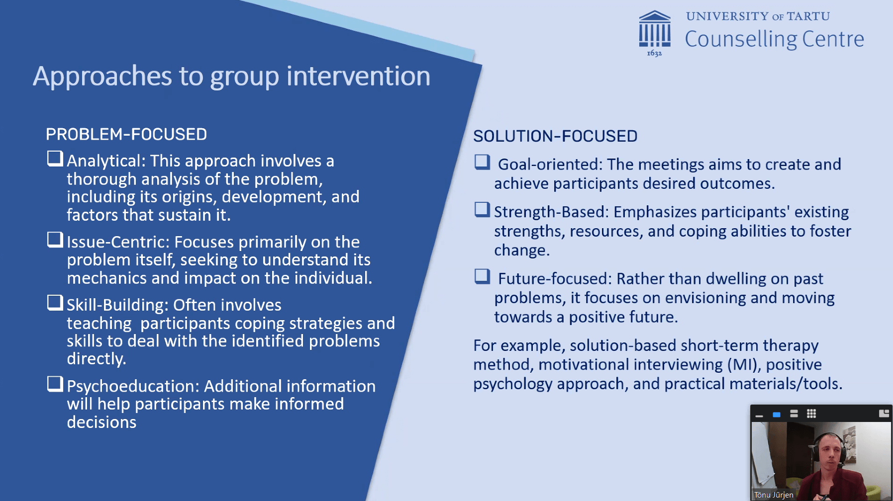

Webinar 3 "Working with Groups" at the University of Tartu (May 20, 2024)
The University of Tartu's Counselling Centre recently hosted a webinar titled "Working with Groups" on May 20th, 2024. Led by Tõnu Jürjen and Sharipha Rzayeva, the webinar delved into the advantages of group work in mental health support. Navigating university life can be daunting, often accompanied by feelings of anxiety, depression, and burnout. Recognizing these challenges, the University of Tartu has instituted a multifaceted support system aimed at empowering students to thrive academically and personally.

One such initiative is the array of accessible workshops offered to undergraduate, graduate, and doctoral students alike. These 90-minute sessions cover essential topics such as study skills, well-being, and time management, providing students with valuable tools for success. With workshops available both on-site and online throughout the semester, the university fosters a supportive environment conducive to holistic growth.

Moreover, the university's tutoring program is instrumental in nurturing effective tutors while prioritizing their self-development. Divided into theoretical learning and practical application, the program ensures students gain a comprehensive understanding of their roles, navigate academic regulations, and cultivate essential skills for supporting student adaptation and facilitating learning. By emphasizing professional development and promoting a supportive academic environment, the University of Tartu empowers students to become effective tutors, contributing to a thriving educational community.

In addition to structured programs, the university offers various support groups tailored to address specific student needs. For instance, the group counseling program focuses on coping with anxiety in the study environment, providing participants with strategies to manage exam and performance anxiety. Similarly, the support group for students with ADHD offers a platform for sharing experiences and finding collective solutions to overcome difficulties related to ADHD's impact on learning.
During the pandemic, the university initiated an online mental well-being group aimed at encouraging self-care and building resilience among students. Operating as a semi-open group, participants have the flexibility to join or leave every five sessions, ensuring ongoing support for maintenance and relapse prevention. Led by experienced counselors, these groups provide a safe space for students to discuss their experiences, receive peer support, and develop essential coping skills.
In conclusion, the University of Tartu's comprehensive support initiatives underscore its commitment to fostering student well-being and academic success. By providing accessible resources, structured programs, and supportive communities, the university empowers students to navigate the challenges of university life with confidence and resilience.